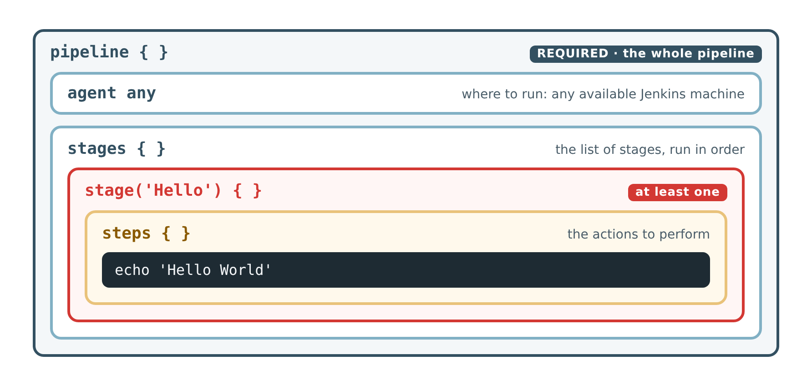

Lab 2 · Your First Pipeline
2. Understanding the Code
A declarative pipeline is made of blocks nested inside each other, like boxes in boxes. Each block opens with { and closes with }.

pipeline: every declarative pipeline starts with this block. It is mandatory and contains everything else.agent: says where the pipeline runs.agent anymeans "on any available Jenkins machine". Jenkins supports many kinds of agents (other servers, Docker containers, Kubernetes pods…); we will use them later in the module.stages/stage:stagescontains the list ofstageblocks, run one after the other. At least onestageis mandatory. Here, the stage is named Hello; this name appears in the stage view.steps: contains the actual operations Jenkins performs. Here, a single step:echo 'Hello World'prints a message in the logs.
Rules to remember
- Every
{needs its}. A missing brace is the most common error. - Texts go between quotes:
'Hello World'. - Indentation is not required, but it makes the structure readable. Keep it.
Reading the Console Output
Each block of the code appears in the logs:
[Pipeline] nodeandRunning on Jenkins in /var/jenkins_home/workspace/hello-world: the agent. Jenkins runs on its built-in node, in a working folder named after the job (the workspace).[Pipeline] { (Hello): the start of the stage Hello.[Pipeline] echothenHello World: the step and what it printed.Finished: SUCCESS: the result of the whole build.